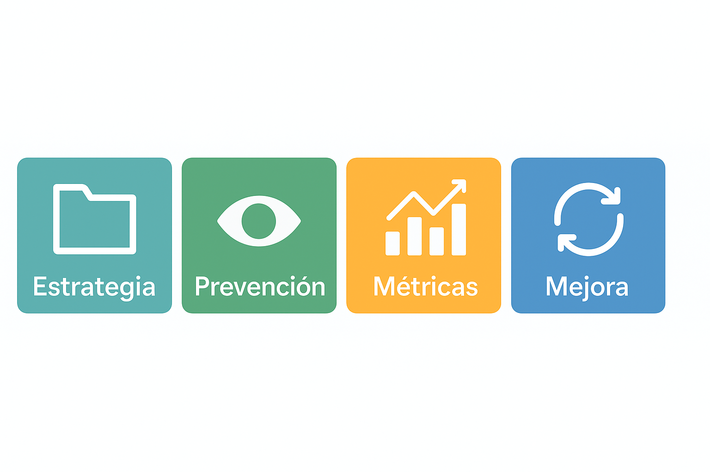

¿Qué rol cumple un QA?
Es el profesional responsable de asegurar la calidad del software y de prevenir fallos en él. Se encarga de garantizar el correcto funcionamiento del producto desde el primer momento y de confirmar que satisface las expectativas de los usuarios.
Responsabilidades clave del QA
- Diseñar estrategias y planes de prueba (funcionales, no funcionales, automatización).
- Prevenir defectos mediante revisión temprana de requisitos y código.
- Medir y reportar calidad con métricas (cobertura, defectos, severidad, tiempo de ciclo).
- Promover mejora continua del proceso de desarrollo.
